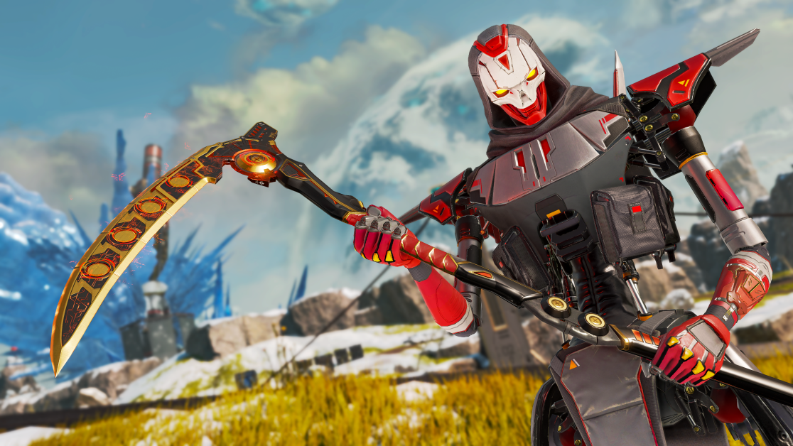
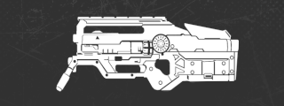
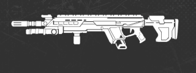
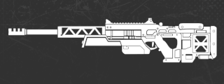

◾︎レジェンド調整
ライフライン リワーク!!!
- ・空中でジャンプボタンを長押しするとD.O.C.が発動し、短時間滑空する。
- ・D.O.C.を展開して仲間を復活させる。ライフラインは防御役に回ることができる。
- ・D.O.C.は付近の味方を回復する。D.O.C.を展開すると、味方を指定して追従するよう指示を出すことができる。
- ・D.O.Cを投げてヘイローシールドシステムを起動させる。その効果範囲内の全プレイヤーは、回復アイテムや消耗品を使う速度が向上する。
▪️パッシブ：コンバットグライド
▪️戦術アビリティ：D.O.C.ヒールドローン
▪️アルティメット：D.O.C. ヘイローシールド
- ○Lv2パーク
- ・エクステンデッドフライト：D.O.C.で滑空できる時間が1.5秒長くなる。
- ・バットパック：スタックごとにバッテリー+1。デスボックスのバッテリー数を表示。
- ○Lv3パーク
- ・エンハンスドラジオ：D.O.C.の指示範囲を50%増加。
- ・戦術クールダウン+：戦術アビリティのクールダウンが10秒短縮する
▪️アップグレード
コンジット 強化
- ・味方のデスボックスとクラフトでバナーを回収できるタイミングで利用できるようになった
- ・味方のバナーを所持している場合、リスポーンビーコンとモバイルリスポーンビーコンで機能するようになった
- ・ダウンした味方に対して最小射程制限がなくなり、コンジットが倒れたチームメイトの元まで駆け寄れるようになった
- ○Lv2パーク
- ・バットパック:スタックごとの追加のバッテリーに加えて、デスボックスのバッテリー数も表示されるようになった
▪️パッシブ：コンバットグライド
▪️アップグレード
クリプト 弱体化

- ・リングダメージを受けるようになった（リングによるダメージ1回につき10%）
- ○Lv2パーク
- ・オフザグリッド:クリプトから20m以内にいるプレイヤーは、1.5秒ごとにかすかに点滅する透明化エフェクトを見られるようになり、近くに隠れているクリプトを特定できるようになる
- ・クローク時の音声範囲と音量を増加
▪️戦術アビリティ：スパイドローン
▪️アップグレード
ジブラルタル 強化
- ・クールダウンを30秒から17秒に短縮
- ・クリプトのEMPやマギーのモンケンで破壊されなくなった
- ○Lv2パーク
- ・フレッシュスタート: 削除
- ・ショット・ショット・ショット: 削除
- ・NEW ビッグブラザー: アルティメットの効果範囲を20%増加
- ・NEW ファストショッティ: ショットガンを使うと移動速度が速くなり、ノックダウン時にショットガンを自動でリロード
- ○Lv3パーク
- ・ベイビーバブル: クールダウンを25秒から12秒に短縮
▪️戦術アビリティ：プロテクトドーム
▪️アップグレード
ホライゾン 強化

- ○Lv2パーク
- ・バッテリーコレクション：削除
- ・NEW バットパック: スタックごとにバッテリー+1に加えて、デスボックスのバッテリー数も表示
▪️アップグレード
ミラージュ 強化

- ・パーティーライフ：アルティメット中に本物のミラージュがわかってしわないように、体力バーが表示されなくなった
- ○Lv2パーク
- ・ミラクルワーカー: 削除
- ・NEW バットパック: このアップグレードは、スタックごとの追加のバッテリーに加えて、デスボックスのバッテリー数も表示
▪️アルティメット
▪️アップグレード
ニューキャッスル 強化
- ・傷兵警護: リバイブシールドのティアごとのHPが+50%上昇
- ・白は200から300、青は300から450、紫/ゴールドは500から750に増加
- ・ダメージを受けなくなった
- ・ニューキャッスルがダウンした状態でも位置を変更できるようになった
- ○Lv2パーク
- ・重厚シールド: 削除
- ・NEW ヒーローハッスル: 復活時の移動速度が大幅に上昇
- ○Lv3パーク
- ・ストロングホールド: キャッスルウォールの体力向上を250から500に増加
- ・NEW 究極の救世主: キャッスルウォールは着弾半径内の味方にシールド回復を付与する
-回復効果は15秒間持続し、ダメージを受けると2秒間回復が一時停止する
-ダウンすると復活するまで回復を開始しない
▪️パッシブ
▪️戦術アビリティ
▪️アップグレード
レブナント 弱体化

- ・フォージシャドウ: シールドのHPが3秒経ってから即座に回復するのではなく、最大50HPまで回復するようになった
▪️アルティメット
ワットソン 強化
- ○Lv2パーク
- ・フレッシュスタート: 削除
- ・NEW 復活の達人: サポートクラスの「復活の達人」が使用可能
▪️アップグレード
◾︎武器調整
新武器「EPG-1」登場!!
- ・範囲ダメージ
- ・ロケットジャンプを可能とする能力を持つ新武器
- ・新要素「リフトレリック」から入手可能
▪️詳細
ハボック ケアパケ化
- ・腰撃ちの改善
- ・マガジンの装弾数を36に引き上げ
- ・ダメージを18から19に増加
- ・ビームショットが可能に
- ・弾薬消費量が多い
- ・非常に正確
- ・壊滅的な破壊力
▪️詳細
▪️セレクトファイヤ装着
ディボーション 通常武器化＆強化

- ・スピンアップの時間を短縮
- ・リバース腰撃ちの引き締めが遅くなり、精度が低下
- ・ターボチャージャースロットを削除
▪️詳細
Lスター 強化

- ・ダメージを17から18に増加
- ・ゴールドマガジンは紫のマガジンよりも冷却時間を短縮するようになった
- ・冷却アニメーションが滑らかになった
▪️詳細
ロングボウ 強化

- ・ダメージを55から60に増加
▪️詳細
P2020 強化

- ・アキンボ： 腰撃ちの基本射撃を改善
▪️詳細
ランページ 強化
- ・減衰率の増加
- ・一発ごとのコスト減少
- ・チャージ容量の大幅な増加
- ・ランページにテルミットをチャージすることに成功すると、リロードが発動するようになった
▪️チャージ状態
センチネル 強化

- ・発動条件を満たした上でブーステッドローダーを装備した状態でセンチネルをチャージすると、次のマガジンがブーステッドリロードの場合と同様にオーバーロードされる
- ・チャージ容量の増加
- ・チャージの合計時間を増加
- ・シールドセルでセンチネルをチャージすることに成功すると、リロードが発動
▪️詳細
スピットファイヤ 強化
- ・ダメージを18から19に増加
▪️詳細
ピースキーパー 強化

- ・チョーク速度が上昇
▪️詳細
トリプルテイク 強化

- ・チョーク速度が上昇
- ・連射速度がわずかに増加
▪️詳細
◾︎ホップアップ調整
ブーステッドローダー
- ・弾薬0で発動するように変更
- ・センチネルに装着可能に
▪️詳細
ガンシールドジェネレーター
- ・シールドリチャージのクールダウン時間を12秒から10秒に短縮
- ・出現率を引き下げ
▪️詳細
ハンマーポイント
- ・出現率を引き下げ